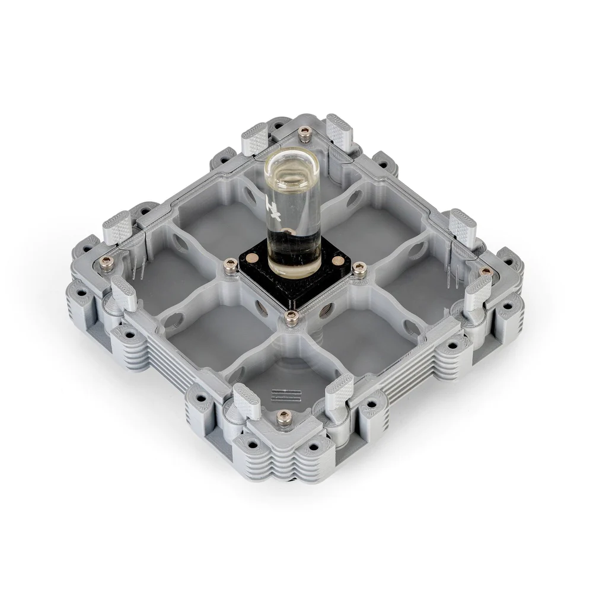

-
MÓDULO HORMIGUERO 2:2
MÓDULO HORMIGUERO 2:2
$400.00
MÓDULO HORMIGUERO 2:2
El Módulo Hormiguero 2:2 es el hogar perfecto para tus hormigas. Este hormiguero ha sido diseñado especialmente para garantizar la comodidad tanto del criador como de las hormigas. Su diseño modular permite que puedas ampliarlo fácilmente en cualquier momento, adaptándolo a las necesidades de tu colonia.
Una de las características más destacadas de este hormiguero es su sistema de humedad regulable HydroX. Este sistema garantiza que tus hormigas siempre tendrán acceso al agua fresca, y podrán beber directamente del sistema de humedad. Además, gracias a su sistema de imanes de calidad, podrás desconectar el sistema de humedad fácilmente y sin esfuerzo.
El Módulo Hormiguero 2:2 cuenta con tuercas de acero inoxidable integradas que aseguran una larga vida útil y resistencia. Toda la tornillería es de acero inoxidable, lo que garantiza la máxima durabilidad y resistencia a lo largo del tiempo. Además, sus patas antideslizantes y antivibración aseguran que tu colonia estará segura en todo momento.
Para facilitar el cuidado de tus hormigas, cada conexión del hormiguero cuenta con compuertas rotatorias que te permiten abrir o cerrar el paso de las hormigas según tus necesidades. Además, el hormiguero es completamente antifugas, por lo que no tendrás que preocuparte por fugas o ataques inesperados.
El Módulo Hormiguero 2:2 está disponible en varias configuraciones de diseño de galerías y de HydroX para adaptarse a las necesidades específicas de tu colonia. Además, se encuentra disponible en dos elegantes colores mate, blanco y gris, lo que proporciona una excelente visibilidad de la colonia sin reflejos.
Con dimensiones de 13,2 x 13,2 cm, el Módulo Hormiguero 2:2 es el hogar perfecto para tus hormigas. Ofrece comodidad, modularidad y un sistema de humedad regulable de calidad para asegurar que tu colonia esté siempre en las mejores condiciones posibles.